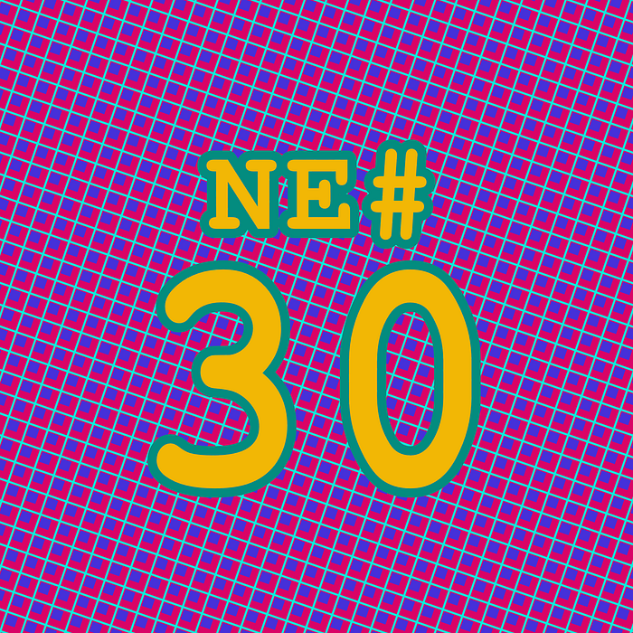
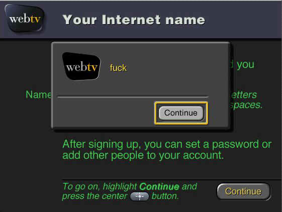

Die Nerd Enzyklopädie 30 - Die falsche Fehlermeldung

Mitte der 1990er Jahre startete in den USA ein besonderer Internet-Provider seinen Dienst: WebTV Networks Incorporated. In der Regel benötigte man zu dieser Zeit für den Zugang zum Internet ein Modem, das zwischen Telefon-Dose und Computer angeschlossen wurde. WebTV funktionierte mit einer Set-Top-Box und einem Fernseher und ermöglichte so den Zugang zum Internet auch ohne Computer. Der Werbe-Slogan lautete:
You’re surfing the Web with a remote control in one hand and a handful of cheese puffs in the other. Now that’s progress.
Am 18. September 1996 wollte das Unternehmen seinen Dienst der Öffentlichkeit zugänglich machen. Ab diesem Datum war es möglich, ein Benutzerkonto für WebTV anzulegen. Einen Tag vorher saßen Techniker, Programmier und Gründer zusammen, um den Prozess der Benutzeranmeldung zu prüfen und das System auf Fehler zu untersuchen.
Bei einer Benutzeranmeldung ist es üblich, bestimmte anzügliche oder geschützte Begriffe für den Namen des Kontos zu verhindern. Seien es Beleidigungen oder reservierte Begriff wie „admin“, „root“ und so weiter. Bei WebTV setzte man dazu auf eine Datei, die diese gesperrten Begriff enthielt. Die Datei war folgendermaßen aufgebaut:
admin.*
User names may not start with “admin”.
postmaster
You’re not the postmaster.
poop
That’s a bad word.
weenie That’s a bad word.
Jeder Eintrag bestand demnach aus zwei Zeilen. Die erste Zeile enthielt einen regulären Ausdruck, der den nicht zugelassenen Begriff beschreibt. Die zweite Zeile beinhaltet die Fehlermeldung, sollte jemand versuchen den Begriff für sein Benutzerkonto zu verwenden. Wenn also jemand ein Konto mit dem Benutzernamen admin einrichten wollte, wurde ihm das mit der Fehlermeldung “User names may not start with ‘admin’” verweigert.
Einer der Techniker hatte beim Anlegen der Datei einen Fehler gemacht. Er wollte die Datei in zwei Listen unterteilen: Eine Liste mit geschützten Namen (admin, postmaster, root, …) sowie eine Liste mit anzüglichen, obszönen Namen (fuck, poop, …). Zur besseren Lesbarkeit trente er die beiden Listen durch eine leere Zeile:
admin.* User names may not start with “admin”.
postmaster You're not the postmaster.
fuck
That's a bad word.
Aber auch die leere Zeile wurde vom System als regulärer Ausdruck interpretiert. Und dieser passte zu jeder Eingabe! Die Folge war, dass der Schutzmechanismus beim Anlegen eines Benutzerkontos auf jeden Namen reagierte und die darauffolgende Zeile, wie programmiert, als Fehlermeldung an die Benutzer:in zurückgab. Und in diesem Fall war das:

Der Fehler wurde natürlich umgehend behoben. Als WebTV am nächsten Tag der Öffentlichkeit zugänglich gemacht wurde, kam es dem Vernehmen nach zu keinen beleidigenden Zwischenfällen.
Der Vorfall verdeutlich jedenfalls wie wichtig es ist, ein System in einer geschützten Umgebung ausgiebig zu testen.